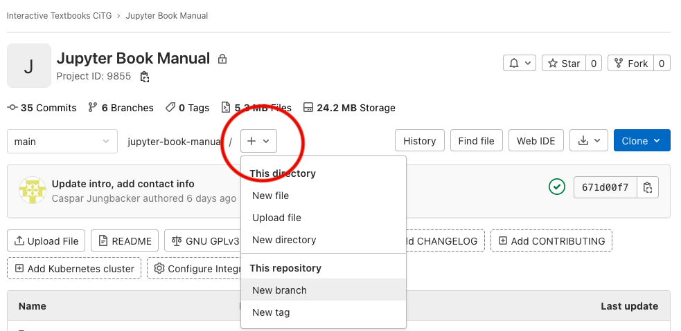
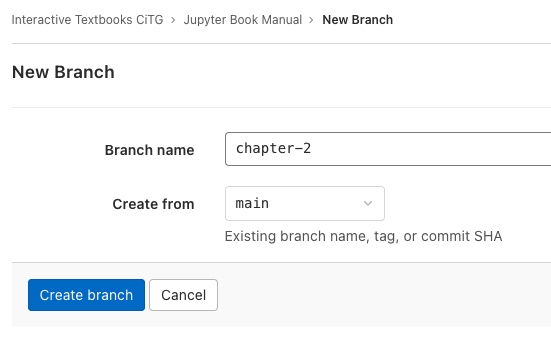
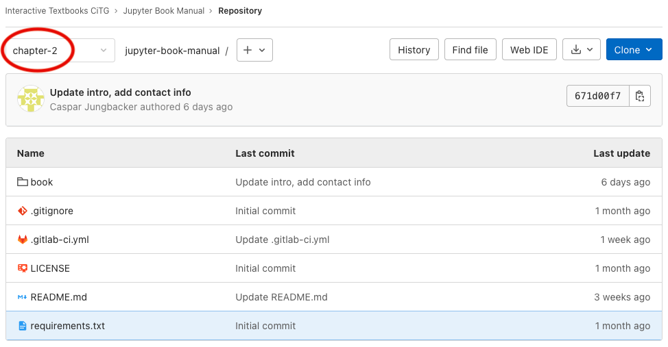
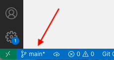
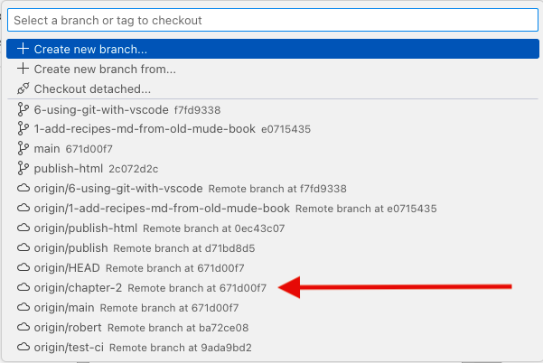

Branches#
Branches are a very useful feature of Git. Branches allow you to work on multiple versions of your codebase simultaneously; you create a copy of your codebase, on which you can work independently of the main codebase. Some advantages of working with branches are:
Isolation: when you work on your own branch, your changes are isolated from the main codebase. Unfinished or unreviewed parts of your book are “hidden”.
Collaboration: branches make it easier for multiple project members to work on the same codebase simultaneously. If every member works on their own branch, they can make their changes without having to worry about interfering with another members’ changes.
How to make a branch#
The act of making a new branch from an existing one is called branching. Usually, you want to branch from the main branch, but you can of course also choose to branch from another branch. The branch from which you create a new branch is called the source branch.
On GitLab, navigate to the repository of your project. Under the project description, you should see a menu button with a “+” in it (see Fig. 3). Click this button, then click on “New branch”.

Fig. 3 Click the highlighted button to make a new branch.#
A new page opens (Fig. 4), on which you can specify the name of your branch and the source branch. Try to think of a good name for your branch. For example,
chapter-2is a suitable name if we’re going to be working on Chapter 2 of our book. After you’ve made sure that the selected source branch is correct, click “Create branch”.

Fig. 4 We’re making a new branch called chapter-2 from the main branch.#
You should be sent back to an overview page of your repository. In the branch selection menu (see Fig. 5), it should now say
chapter-2instead ofmain.

Fig. 5 The circled menu is the branch selection menu.#
The final step is to check out our new branch in VS Code. Checking out means that we’re changing our working branch (i.e., the one to which we will be committing our changes) from one to the other. In VS Code, open the branch menu from the bottom left (see Fig. 6). You’ll be be greeted with a menu that looks like the one in Fig. 7. In this menu, we get an overview of the branches of our repository. Notice that our new branch
chapter-2appears asorigin/chapter-2, and has a cloud icon in front of it. This means that the branch only exists on the remote repository. Check out the branch by simply clicking on it. Check that the branch is indeed checked out by looking at the branch menu button in the bottom left again; it should now say the name of your branch instead ofmain(in our casechapter-2).

Fig. 6 Location of the branch menu.#

Fig. 7 The branch selection menu, where our new branch has shown up.#
Now that we’ve created and checked out our new branch, we can start making and committing changes.
Predefined branches#
If your repository is located in the Interactive Textbooks CiTG group on GitLab, it is likely that it already has some predefined branches in addition to main, namely publish and publish-html. These branches serve the following purposes:
main: this is the main development branch on which new changes are collected. If you’re working onpublish: this is the version of the book that is visible to the public (i.e., the version that the students will see). Again, you cannot push directly to this branch.publish-html: this branch contains the HTML of the version of the book that lives on thepublishbranch. When a new version of the book is merged in thepublishbranch, the new book is built using thejupyter book buildcommand and the HTML is uploaded topublish-html. The webserver is constantly fetching this branch and pulling any incoming changes.